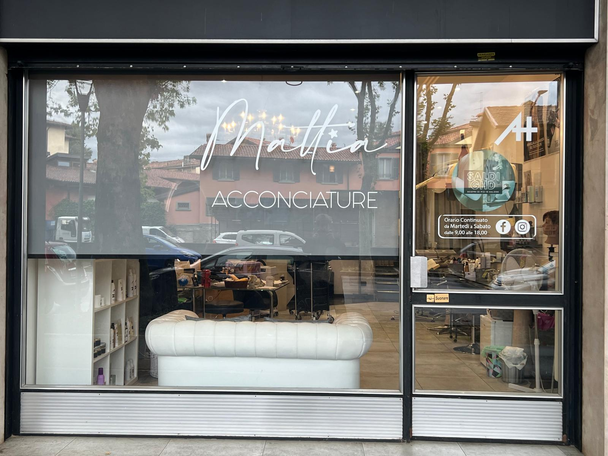
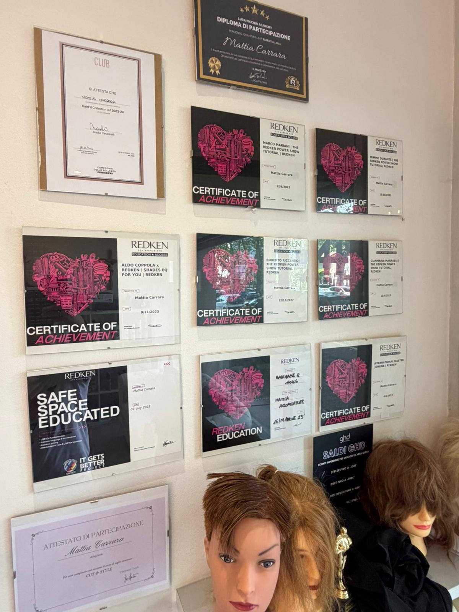
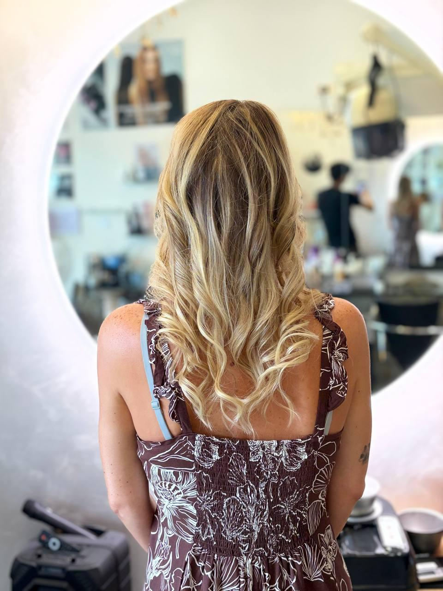
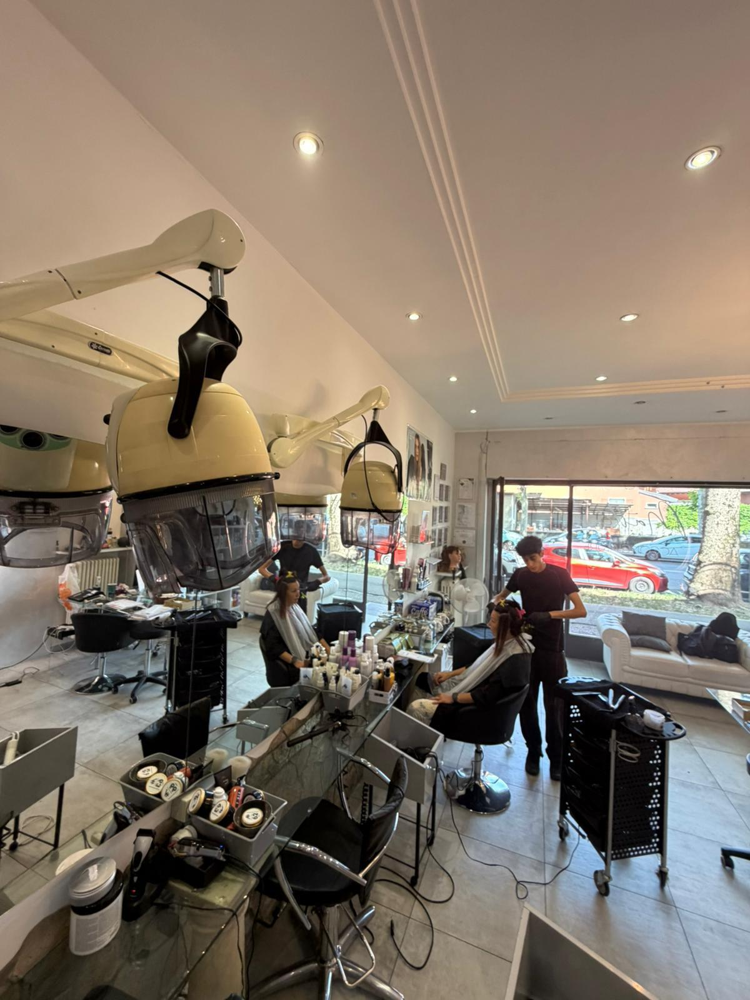
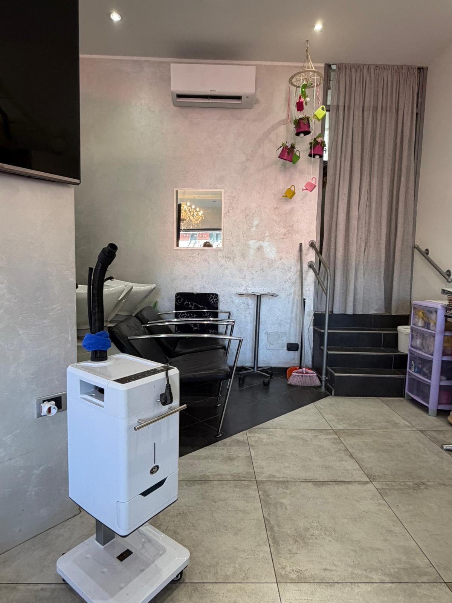

Taglio uomo
Un taglio preciso e personalizzato in base allo stile desiderato.
Bergamo · Esperienza e formazione
Un salone dove esperienza, tecnica e attenzione alla persona si incontrano. Ogni appuntamento parte dall'ascolto e arriva a un risultato pensato per te.

Servizi
Un listino chiaro con i principali servizi del salone.
Un taglio preciso e personalizzato in base allo stile desiderato.
Taglio e cura della barba in un unico servizio.
Un taglio studiato in base alla persona e al risultato desiderato.
Taglio e piega pensati per le più piccole.
Un servizio dedicato a chi desidera un lavoro più strutturato e personalizzato.
Styling e piega per completare il look.
Un'acconciatura realizzata in base all'occasione e allo stile desiderato.
Un trattamento essenziale per la cura dei capelli.
Un trattamento dedicato alla cura dei capelli soggetti a caduta.
Più colori miscelati insieme per creare nuance uniche e inimitabili.
Un servizio dedicato alla sposa, con un'acconciatura studiata e personalizzata per il grande giorno.

Chi siamo
La storia di Mattia nel mondo dell'acconciatura nasce molto prima della sua professione. Nasce nel negozio di suo padre, il luogo che ha frequentato fin da piccolo e che nel tempo è diventato una parte importante della sua vita.
Già in seconda media ha iniziato a dare una mano nel negozio. Stando accanto a suo padre ha imparato a conoscere questo mestiere da vicino: ha osservato i suoi gesti, il rapporto con i clienti e la soddisfazione delle persone quando si guardavano allo specchio alla fine del servizio.
Quel legame con suo padre è stato fondamentale. Da semplice esperienza vissuta al suo fianco, il mestiere è diventato una passione vera: la voglia di creare con le proprie mani, trasformare un'idea in un risultato concreto e continuare a crescere.
Oggi, dopo 15 anni di esperienza lavorativa e 8 anni di formazione all'Accademia Aldo Coppola, Mattia porta avanti quel percorso con una propria identità. La tecnica è importante, ma lo è altrettanto il rapporto umano con chi si siede sulla sua poltrona.
Per Mattia fare il parrucchiere significa unire l'amore per il mestiere, quello per la persona e un legame familiare che ha avuto un ruolo fondamentale nella sua scelta.
Galleria
Una selezione di risultati, prima e dopo e lavorazioni realizzate nel salone.



Servizio sposa
Un esempio di acconciatura sposa realizzata da Mattia, con attenzione ai dettagli e allo stile della persona.
Il metodo
Un modo di lavorare costruito attraverso esperienza, ascolto, formazione e rapporto umano.
Ogni persona ha esigenze, gusti e caratteristiche diverse. Capire davvero ciò che desidera è il primo passo del lavoro.
Un percorso iniziato molto giovane nel negozio di suo padre e costruito attraverso 15 anni di esperienza lavorativa.
Otto anni di formazione all'Accademia Aldo Coppola e la volontà di continuare a imparare nuove tecniche e tendenze.
Chi si siede sulla poltrona deve sentirsi accolto, ascoltato e seguito con attenzione, non semplicemente trattato.
Orari
Per prenotazioni e disponibilità puoi contattare direttamente il salone su WhatsApp.
| Lunedì | Chiuso |
|---|---|
| Martedì | 09:00–18:00 |
| Mercoledì | 09:00–18:00 |
| Giovedì | 09:00–18:00 |
| Venerdì | 09:00–18:00 |
| Sabato | 09:00–18:00 |
| Domenica | Chiuso |
Domande
Le prenotazioni vengono gestite direttamente tramite WhatsApp.
Mattia Acconciature AH si trova in Viale Giulio Cesare 3, Bergamo.
Il salone offre servizi di taglio, piega, acconciatura, trattamenti e Color Space. Il listino completo è disponibile nella sezione Servizi.
Certamente. Puoi scrivere direttamente a Mattia su WhatsApp per chiedere informazioni sul servizio più adatto alle tue esigenze.
Contatti
Per disponibilità, informazioni e prenotazioni, puoi contattare direttamente Mattia.
Mattia Acconciature AH
Esperienza, formazione
e attenzione alla persona.